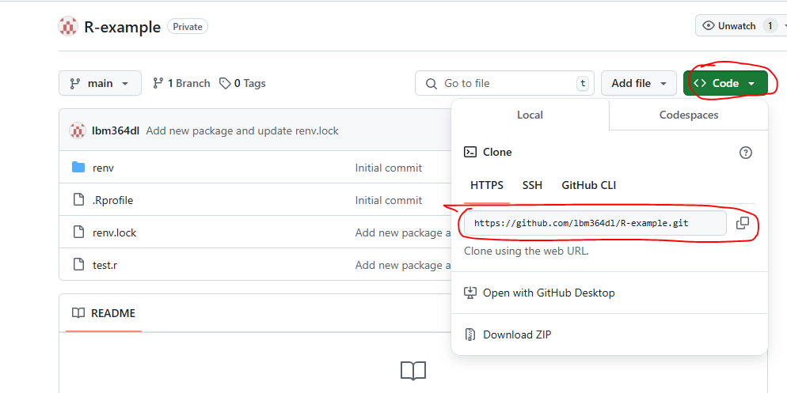
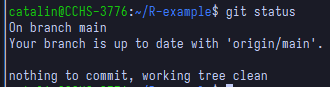
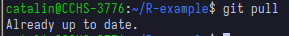
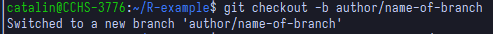
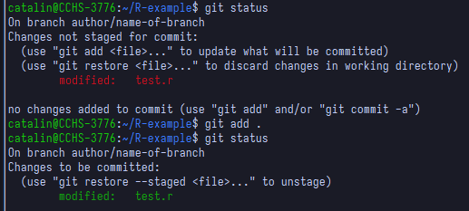
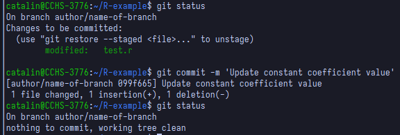
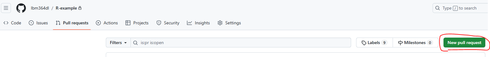
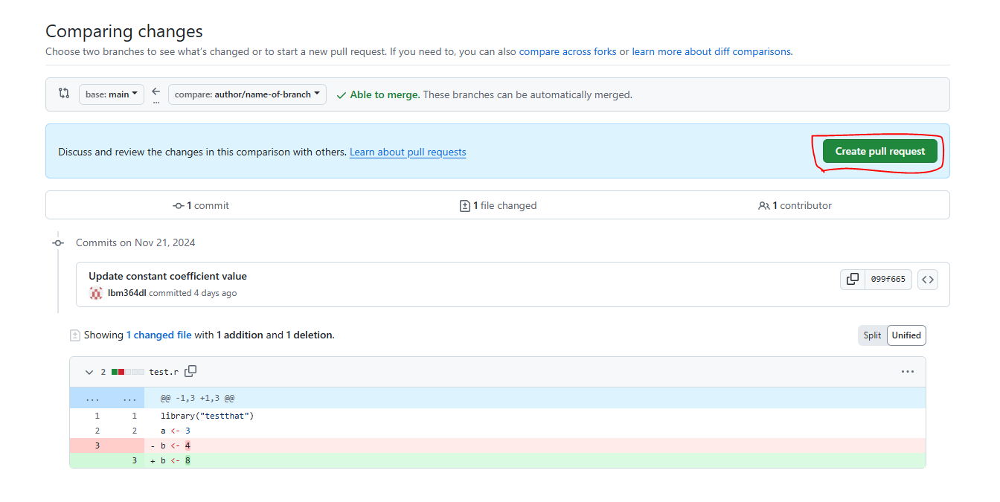
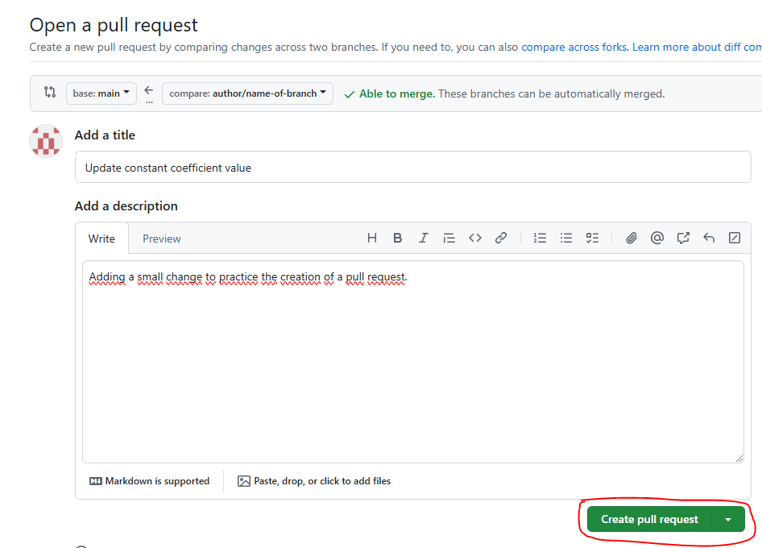
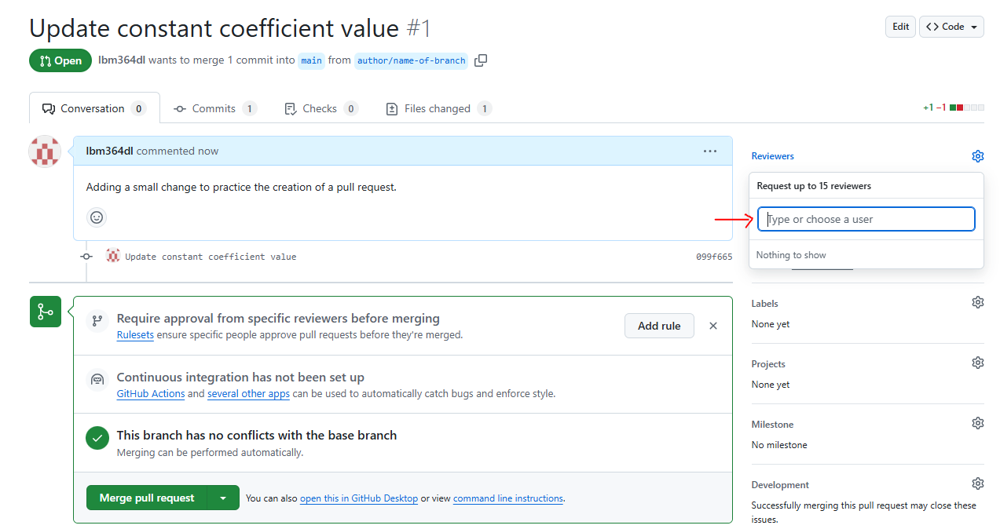

1 Introduction
1.1 Cloning the repository
To get started with Git, you need your operating system to recognize Git commands. We will assume you are on Windows, so you will have to install Git from here. If you do not know whether it is the 32 or 64 bits version, you most likely need the 64 bit one. You should now have something called ‘Git Bash’ installed, which is like a command line tool (similar to Windows CMD). You can open Git Bash inside a specific directory (this is just a technical name for folders and I will use it from now on) by right-clicking your desired directory in the file explorer and selecting ‘Open Git Bash here’. However, I would recommend you to learn some basic commands to navigate from the command line itself (from now on, writing <some-text> is not part of the command, I just use it as a placeholder for what you need to write there):
Print your current directory:
pwdThis is just useful so you can see where you are right now.
List files from your current directory:
lsSuppose you do not know the exact path to follow but you know it is inside a certain subdirectory from the one you are in right now. Listing everything in the current directory with
lsis a useful way to spot which subdirectory you are looking for, so that you can then navigate inside it withcd.Move to another directory relative to the one you are in right now:
cd <relative-path-where-to-move>
You can use ls and cd <relative-path> repeatedly until you are in the directory where you want to place a subdirectory containing the repository. Again, you can double check that using pwd.
We assume here that the repository you want to contribute to already exists. You can go to its page on GitHub and copy the URL as seen in the image below:
The git terminology used for ‘downloading’ a repository to our local file system is ‘cloning’. We can clone a remote repository (in this case from GitHub) using the following command:
git clone <url-you-copied>This is called cloning via HTTPS. A browser should open and ask you to introduce your GitHub credentials. There are other ways of cloning like SSH, but that is out of the scope of this guide.
1.2 Pulling remote changes
Now a new directory should have been created with the content of the repository in your local file system. From now on we will see the basic git commands that you would need in daily usage. We assume you are inside the repository. We explain them with an example.
Suppose you want to start contributing to this repository. A good practice (and one that we will enforce to use) is to make your own code changes in a ‘different place’ than the ones you currently see in the repository. The things you see now are in what it is called the ‘main branch’, and you will make your code changes in a ‘new branch’, which will start with the same content as the main one, but will then evolve with different changes. If you have not done anything yet, you should be in the main branch (maybe it is called ‘main’ or ‘master’, these are just conventions, but I will assume it is called ‘main’). You can use the command git status to check this (do not mind that my terminal looks different in the screenshots, you can use the same commands in Git Bash):

Your local version of a repository does not need to match the remote version (the one we store in GitHub in this case), but before you start your work on a new branch, you should keep your main branch up to date in case someone added new code in the GitHub repository since the last time you checked. We get any new remote changes to the local repository by using the command
git pull
In this case I already had all the remote changes, and that is why the message says ‘Already up to date’, but the message will be different if you had missing changes. This is the ‘easy way’ to do it. The command git pull tries to fetch changes from the equivalent remote branch, i.e., the one that has the same name on remote as it has on your local repository. This may not always work as expected so there is a way to always specify from which remote branch you want to get these changes (and I highly recommend always using it explicitly):
git pull origin <name-of-remote-branch>For example, imagine you asked someone for help on your own branch and they added some new changes on your branch, that you do not have locally. Then, if your branch is called my-branch, and you are already on your branch locally, you would want to use the command
git pull origin my-branchLikewise, for the first example shown here (keeping the main branch updated), I would always be explicit:
git pull origin main1.3 Creating our own branch
After the pull, we are now safely up to date with the remote changes. Now it is time to learn how to create our own ‘branch’, from which we will start working on new code. We use the following command:
git checkout -b <name-of-branch>
The command git checkout <name-of-branch> is used to change from one branch to another (so that you will now see the files and changes that are in that branch). Additionally, if we add the -b option, it will create the branch with the given name if it does not already exist, which is our case in this example. The branch name should be something like author/name-of-branch. Thus, some common practices for naming your branches (and that we should follow) are:
- They do not contain caps (all lowercase)
- Words are separated with dashes (
-) - The name includes the author and some descriptive name separated by a slash (
/) - The descriptive name should ideally start with an action (a verb) in imperative style (fix, create, test…).
If Ermenegildo wants to create some code for preprocessing bilateral trade data, an acceptable branch name could be ermenegildo/preprocess-bilateral-trade-data.
1.4 Adding changes to our branch
Now you are in your own branch and you can start working on your changes. While you work on them, you should keep track of changes with git. We can add all changes using the command
git add .Here the dot means ‘this directory’, which essentially adds all new changes, i.e. all things inside the directory. We can add just a specific file instead using the command
git add <relative-name-of-file>
After adding our changes, we must ‘commit’ them. This commit step is what actually saves your changes in the git history. You do this with the command
git commit -m 'Some descriptive message for your changes'A common practice for commit messages is to start them with a verb in infinitive (imperative style), indicating an action that was performed, e.g., 'Create tests for bilateral trade data preprocessing'.

A common practice is to make small commits, that is, include just a few changes in each commit, so that it is easier to keep track of your work’s history, instead of just having a single commit when you are done with everything. Ultimately, the amount of commits is your decision, but should not be just one commit per branch.
1.5 Pushing our changes
After committing, we now have our changes in local git history, but we should probably also add them to the remote GitHub repository. We do this using the command
git push origin <name-of-branch>Now you should be able to see your changes in your own branch from GitHub itself, you just need to select your own branch instead of the main one.
You should remember to push your changes regularly to the remote repository. Otherwise you risk having a bunch of code features in your local computer that could be lost if something happened to it. This is aligned with the previous suggestion of creating many smaller commits as opposed to giant ones, so that you can also push them more frequently.
1.6 Creating a pull request
Suppose you are done with your changes and you want to add these to the main branch. Mixing one branch with another is known as ‘merging’. In this case we would like to merge our new branch with the main branch. This can be done forcefully, but the common practice we will be following is to create what is known as a ‘Pull request’ from our branch into the main one, and we do this directly from GitHub, once we have pushed all of our changes.


Here you can see all the changes you made (that differ from the main branch) before clicking again ‘Create pull request’. Then you will see the following, where you should add some title and description to explain what you have done. You finally click ‘Create pull request’ again.

Now the Pull Request (often abbreviated as PR) is created and the next step is to ask for someone’s review.

Ideally these changes would not be merged until someone else reviews your code. This person might find things you have to change and request these changes before merging, so you would have to keep working on your branch until they are satisfied. Then they would accept your changes and you would be ready to merge your branch into the main one, and the process would be done.
However, sometimes there is an additional step that must be passed before merging, which is related to automatic code checks, e.g. check whether your code is well formatted and whether it passes all tests successfully. If configured, these can run automatically when creating a Pull Request. We will indeed work with them, but we will explain these automatic checks better in the Automatic checks on Pull Requests section.
While working on your own branch, others may have merged their own branches into the main branch and then your own branch would be outdated. When creating a Pull Request yourself, you should make sure your branch is also up to date with everything already on the main branch. Recall from the pulling remote changes section that we can do this with the command
git pull origin mainEven if you are locally on your own branch and directly try to fetch changes from a different remote one (in this case main), this works as expected, that is, it tries to merge all new changes from the main branch into your own local one. This automatic merge works most of the times, but sometimes you may find conflicts, because the program does not know how to combine everything neatly. If this happens, you must manually check which parts of the code should be kept. In the next section we explain how to solve conflicts.
1.7 Solving conflicts
As noted in the previous section, sometimes when you git pull from another branch or from the same remote one (if you are missing some changes), you can find conflicts. A conflict looks like this:
<<<<<<< HEAD
this is my content
that I just added
=======
this is some different conflicting content
from the branch I pulled from
>>>>>>> some_branch_nameSo in a conflict, there are at least three lines the were added by git to separate the conflicting parts. The conflict starts at the line <<<<<<< HEAD, and until we get to the ======= line, the lines in between are the content we added. Then from this one until the end >>>>>>> some_branch_name, the lines in between are the content that someone else added and we did not have yet. Then solving a conflict essentially means removing these three lines added by git. We have three options here. You will have to decide which one you want depending on the situation:
Keep only our content. Solving the conflict would involve removing all lines except:
this is my content that I just addedKeep only the other content. We remove everything except:
this is some different conflicting content from the branch I pulled fromKeep some (or all) content from both parts, or even adapt it adding other things. We remove the three lines added by git and everything else we do not want to keep, leaving something like a mix:
this is my content that I just added this is some different conflicting content
If you have to find conflicts (I advise to do it manually), you could use some text finding tool in your editor, and look for the text HEAD, as this always appears in the first line of a conflict. After you solved all conflicts, you have to do the rest of the steps explained in previous sections, involving git add and git commit, because a pull also counts as a code change, so you have to make a commit from it. In case you are wondering, when you perform a pull without conflicts, you are not creating a commit yourself but git does it for you, automatically. So whether you solved the conflicts or git did it for you, there will always be a commit representing it.